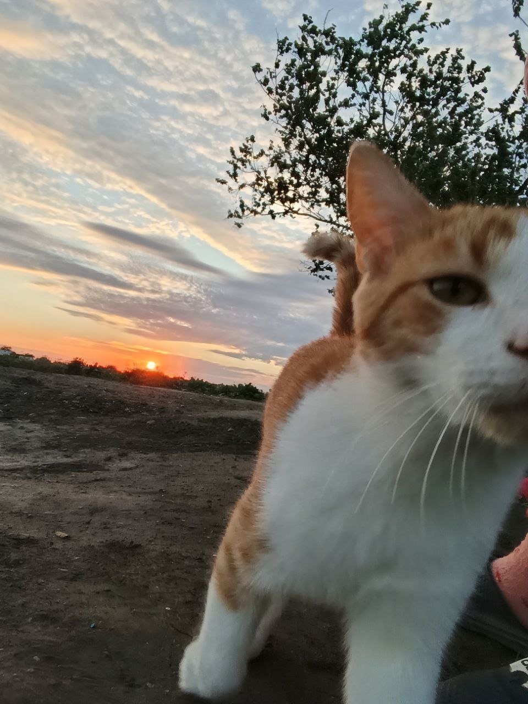

Привіт! Це мій куточок природи 🌿
Мене звати Дарʼя, і це мій невеличкий сайт-портфоліо. Я дуже люблю помічати красиві моменти довкола: як горить sky на заході сонця, як цвітуть квіти у дворі чи як мої коти вивчають світ.

Усі фотографії тут — це мої власні знімки, зроблені під час звичайних прогулянок. Переходь у галерею, щоб подивитися кадр з котиком, макрозйомку та затишне відео!
Перейти до Галереї